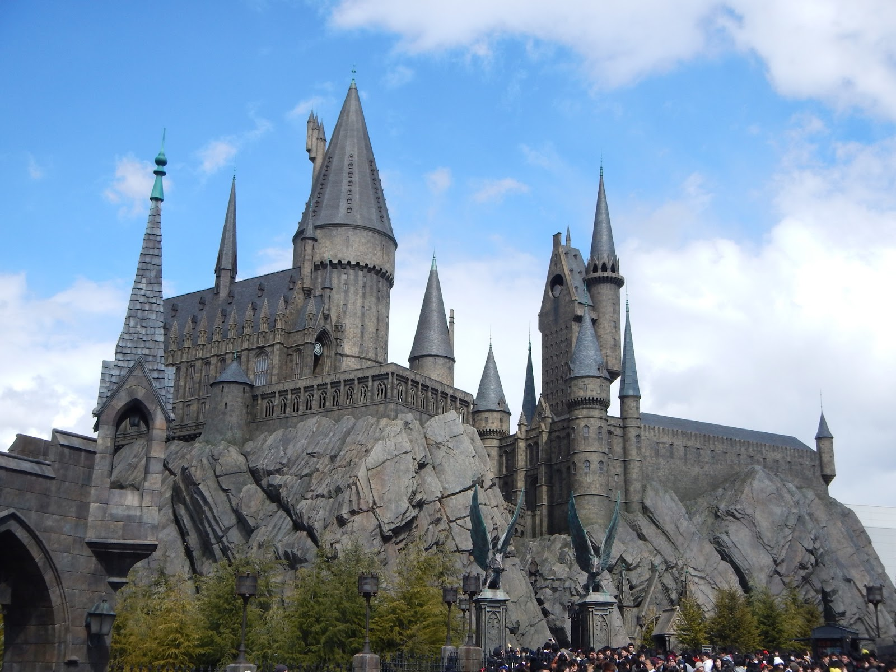

Attraction Features

Universal Studios Japan is definitely one of the must-see attractions when
visiting Osaka. Located in Osaka, Universal Studios Japan opened in March 2001 and has been around
for more than 20 years. Currently, Universal Studios Japan is divided into 10 zones, in order:
Hollywood, New York, Minion Park, San Francisco, Jurassic Park, Waterworld, Amity Village, The
Wizarding World of Harry Potter, Universal Wonderland, and Super Nintendo World.
Not only that,Universal Studios Japan also collaborates with many famous anime, such as “Attack on
Titan”, “Demon
Slayer”, “Hello Kitty”, and “Doraemon”.